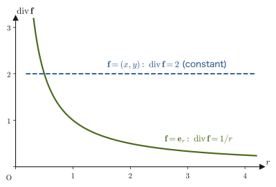
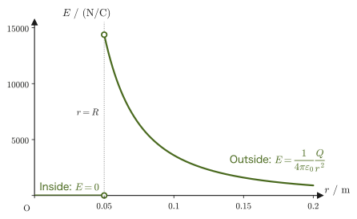

Chapter 35Coulomb's Law and Gauss's Law
When a plastic pad is rubbed with a woolen sweater and then brought close to finely cut scraps of paper, the scraps cling gently to the pad. Lightning is an enormous electric discharge that runs between the clouds and the ground. The N pole of a compass needle, for some reason, lines up with the direction of the Earth's magnetism far away—such phenomena of electricity and magnetism carry a mysterious feel that is somehow different from the forces of “touching and pushing or pulling” that we have dealt with in mechanics and thermodynamics. Yet all of them are remarkably orderly physical phenomena that can be gathered into just a single set of laws (Maxwell's equations). In Parts I through IV, this book dealt with objects that can be “seen with the eyes and touched with the hands”—particles (point masses), rigid bodies, waves, and heat. From this Part V on, for some time, we enter the world of electromagnetism with a new protagonist, electric charge.
The starting point of electromagnetism is Coulomb's law, which you also learned in high school physics—the law stating that the force acting between two point charges is proportional to the product of the charges and inversely proportional to the square of the distance. The form of this equation is strikingly similar to that of Newton's law of universal gravitation, which you also learned in high school. Yet it is precisely because they are similar that certain differences come into view. In this chapter, we begin by placing these two “inverse-square laws” side by side and comparing them (Section 35.1). We then follow Faraday's idea of reinterpreting the Coulomb force not as a “force that acts instantaneously at a distance (action at a distance)” but as a “force transmitted through a property residing in space itself (the electric field) (local action),” and at the same time sort out what the electric field and the magnetic field are (Section 35.2). After that, starting from Coulomb's law and passing through three stages—a spherical surface, a general closed surface, and the divergence theorem—we derive, without skipping a single line, Gauss's law $\operatorname{div}\bm D=\rho$, the first of Maxwell's equations (Sections 35.3–35.5). Finally, taking as an example the electrostatic induction that occurs on a conducting sphere placed between parallel-plate electrodes, we put Gauss's law, which we have just derived, to actual use and clarify “why there is no electric field inside a conductor” and “why charge is distributed only on the surface of a conductor” (Section 35.6).
- Chapter 35 (this chapter) Coulomb's Law and Gauss's Law—a comparison of the Coulomb force with universal gravitation, electric fields and electric field lines, the derivation of Gauss's law, one of Maxwell's equations, and electrostatic induction on a conducting sphere.
- Chapter 36 Electric Potential and Capacitors—the reduction of the electric field to the electric potential (a scalar quantity), a summary of electric-field calculations using Gauss's law, and capacitors and electrostatic energy.
- Chapter 37 Steady Current and Electric Circuits—electric current, resistance, Ohm's law, and Kirchhoff's laws.
- Chapter 38 Sources of the Magnetic Field—the Biot–Savart law and Ampère's law.
- Chapter 39 Magnetic Forces on Currents and Charged Particles—the Lorentz force and the Hall effect.
- Chapter 40 Electromagnetic Induction and Inductance—Faraday's law of induction, self-induction, and mutual induction.
- Chapter 41 Electric and Magnetic Fields in Matter—dielectrics and magnetic materials, polarization and magnetization.
- Chapter 42 Maxwell's Equations and Electromagnetic Waves—a complete summary of the four equations, and the derivation of electromagnetic waves.
- Compare Coulomb's law with Newton's law of universal gravitation, and sort out their differences from four viewpoints: the sign of the force (attraction only, or both attraction and repulsion), the magnitude of the force constant, action at a distance, and local action—and actually calculate how, between an electron and a proton, the Coulomb force exceeds the gravitational force by an enormous factor of about $10^{39}$
- Through Faraday's conception of electric field lines, understand the idea of the electric field $\bm E$, which reinterprets the Coulomb force as a “local action”; the relation $\bm F=q\bm E$ for the force on a charge in an electric field; the superposition of electric fields; and the properties of electric field lines and the convention for their “number.” Also sum up in a single phrase what the magnetic field is
- Starting from Coulomb's law and passing through three stages—a spherically symmetric Gaussian surface → a general closed surface → Gauss's divergence theorem—derive $\operatorname{div}\bm E=\rho/\varepsilon_0$ (the differential form of Gauss's law), one of Maxwell's equations
- Define the electric displacement $\bm D=\varepsilon_0\bm E$, and learn to use Gauss's law in both its integral form $\iint_S\bm E\cdot\bm n\,\dd S=Q/\varepsilon_0$ and its differential form $\operatorname{div}\bm D=\rho$, choosing between them as appropriate
- Understand the physical meaning of Gauss's law (the net number of electric field lines passing through a closed surface represents the amount of charge inside it)
- Using the electrostatic induction of a conducting sphere placed between parallel plates as an example, show from Gauss's law that the electric field inside a conductor in electrostatic equilibrium is $\bm 0$, that the charge is distributed only on the surface of the conductor, and that the electric field just outside the surface is $\sigma/\varepsilon_0$
Source notes: Yasuhide Mochizuki, Physics Notes: Electromagnetism, pp. 1–6.
35.1 The Coulomb Force and Universal Gravitation — The Difference between Two Inverse-Square Laws
In high school physics you learned that when two point charges $q,Q\ [\mathrm C]$ (the unit is the coulomb) are placed a distance $r\ [\mathrm m]$ apart, the magnitude of the force acting between them is expressed as $k|qQ|/r^2$ ($k$ is a constant of proportionality). If we rewrite this in vector form, which includes the direction of the force as well, we obtain the following.
Law 35.1: Coulomb's law
The force experienced by a point charge $q$ placed at a distance $r$ from a point charge $Q$ fixed in vacuum (the Coulomb force) is given by
\begin{equation} \bm F_C=\frac{1}{4\pi\varepsilon_0}\cdot\frac{qQ}{r^2}\,\bm e_r \label{eq:35-coulomb} \end{equation}Here $\bm e_r$ is the unit vector (a vector of magnitude one; we borrow the same symbol as the unit vector in the radial direction of polar coordinates, which we have been using since Chapter 1) pointing from $Q$ toward $q$, and $\varepsilon_0\ [\mathrm{F/m}]$ (epsilon zero) is a constant called the vacuum permittivity. Since $q,Q$ are quantities that carry a sign (positive or negative), depending on the sign of the product $qQ$ the force $\bm F_C$ can point either in the same direction as $\bm e_r$ ($qQ\gt0$: the direction away from $Q$, that is, a repulsive force) or in the opposite direction ($qQ\lt0$: the direction toward $Q$, that is, an attractive force). If we want to know only the magnitude of the force, we take the absolute value and write $\abs{\bm F_C}=\dfrac{1}{4\pi\varepsilon_0}\dfrac{\abs{qQ}}{r^2}$. If we combine the constant of proportionality by setting $k\equiv\dfrac{1}{4\pi\varepsilon_0}$, we obtain exactly the high school physics formula $F=k\abs{qQ}/r^2$.
The $\mathrm F$ (farad) appearing in the unit of $\varepsilon_0$ is the unit of capacitance, and $1\ \mathrm F=1\ \mathrm{C/V}$ (for details see Chapter 36). Using $\mathrm V=\mathrm J/\mathrm C=\mathrm{N\,m/C}$, we can rewrite $\mathrm{F/m}=\dfrac{\mathrm C}{\mathrm{V\,m}}=\dfrac{\mathrm C^2}{\mathrm{N\,m^2}}$. This coincides (apart from the factor $4\pi$) with the reciprocal of the unit $\mathrm{N\,m^2/C^2}$ of $k=1/(4\pi\varepsilon_0)$. Incidentally, the reason we deliberately write the constant of proportionality as $1/(4\pi\varepsilon_0)$ instead of $k$ is that in Section 35.3, when we multiply by the surface area $4\pi r^2$ of a sphere of radius $r$, the factor $4\pi$ cancels and Gauss's law takes the clean form $4\pi r^2\abs{\bm E}=Q/\varepsilon_0$.
Let us set this beside Newton's law of universal gravitation that we studied in Chapter 8. When two particles (point masses) of masses $m,M\ [\mathrm{kg}]$ are separated by a distance $r$, the gravitational force exerted by the particle $M$ on the particle $m$ is
$$ \bm F_g=-G\cdot\frac{mM}{r^2}\,\bm e_r $$($\bm e_r$ is again the unit vector pointing from $M$ toward $m$, and $G$ is the gravitational constant). Comparing with Eq. \eqref{eq:35-coulomb}, we see that “the product of the charges $qQ$” corresponds to “the product of the masses $mM$” and “the constant of proportionality $1/4\pi\varepsilon_0$” corresponds to “the constant of proportionality $G$”; both are forces of the same form, “inversely proportional to the square of the distance” (the inverse-square law). However, if we compare the details, we notice that there are at least four important differences.
(I) The sign of the force—attractive only, or both attractive and repulsive? The formula for universal gravitation carries a minus sign $-$ from the start, and the masses $m,M$ are both positive quantities, so $\bm F_g$ always points in the direction of $-\bm e_r$; that is, it is always attractive. By contrast, Eq. \eqref{eq:35-coulomb} for the Coulomb force carries no minus sign, and depending on the combination of signs of the charges $q,Q$, the force is repulsive for charges of the same sign ($qQ\gt0$) and attractive for charges of opposite signs ($qQ\lt0$) (Figure 35.1). This stems from a difference in the very nature of the two quantities: mass takes only positive values, whereas electric charge comes in both positive and negative kinds.
(II) The magnitude of the force constant. Let us compare the values of the two constants of proportionality. The gravitational constant is
$$ G\approx6.674\,30\times10^{-11}\ \mathrm{N\,m^2/kg^2} $$whereas the constant in Coulomb's law is
$$ k=\frac{1}{4\pi\varepsilon_0}\approx8.988\times10^{9}\ \mathrm{N\,m^2/C^2} $$The two constants have different units ($\mathrm{kg}$ and $\mathrm C$), so comparing the numerical values alone is meaningless. Let us therefore compare them in a concrete situation. If two point charges of $1\ \mathrm C$ are placed $1\ \mathrm m$ apart, the Coulomb force is $k\times\dfrac{1\cdot1}{1^2}\approx9.0\times10^{9}\ \mathrm N$, and if two particles of $1\ \mathrm{kg}$ are placed $1\ \mathrm m$ apart, the gravitational force is $G\times\dfrac{1\cdot1}{1^2}\approx6.7\times10^{-11}\ \mathrm N$. The ratio is $k/G\approx1.35\times10^{20}$. Of course, $1\ \mathrm C$ is a very large charge by everyday standards (the charge on a plastic pad (a thin sheet placed under paper when writing) electrified by static electricity is about $10^{-9}$–$10^{-7}\ \mathrm C$), so our sense of its size differs from that for $1\ \mathrm{kg}$. Even so, it is worth remembering that the force constants alone differ by this much. (In Example 35.1 later, we will see that when we compare actual particles, an electron and a proton, the differences in the values of the masses and charges themselves are added, and the ratio changes by still more orders of magnitude.)
Intuition: What happens when a charge moves (III)
Within Newtonian mechanics, whether a particle is at rest or in motion, the law of universal gravitation describing the force that the presence of that particle exerts does not itself change—the motion of a particle has no influence (other than gravity) on the surrounding space. In electromagnetism, however, the situation is different. When a charge moves, a magnetic field is produced around it—this is precisely the fact, which you also learned in high school physics, that a magnetic field is produced around an electric current (a collection of moving charges). We shall treat this phenomenon in earnest in Chapter 38 (the Biot–Savart law). Furthermore, when a magnetic field changes with time, an electric field is in turn produced (Chapter 40, electromagnetic induction). The phenomenon in which electric and magnetic fields propagate through space while generating each other is the electromagnetic wave (light), and this is the culmination of electromagnetism (Chapter 42). Universal gravitation has no such “partner” field (within the scope of Newtonian mechanics)—this asymmetry is also one of the major differences between the Coulomb force and universal gravitation.
(IV) Action at a distance and local action. Universal gravitation can be naively understood as a force that appears to act instantaneously even when there is nothing in the space between the two particles—action at a distance. Judging only from the form of its formula, the Coulomb force also looks like action at a distance. However, this way of thinking has a physical difficulty—the action-at-a-distance picture cannot answer the question, “If we move one charge, when and how does the force experienced by the other charge learn of the change?” The answer to this question is the idea of the “electric field” in the next section, which reconsiders the Coulomb force as a local action (a force transmitted through a field, that is, an action conveyed locally by way of a field) that “propagates with space itself as the medium” (the answer to this question will be given in the next section). Here “local” means that the force is determined solely by the value of the field at each location; it does not mean that the distance over which the force reaches is short (the Coulomb force reaches far).
Discussion: Two-body forces, central forces, and conservative forces
The Coulomb force and universal gravitation are forces that share the following three properties.
- Two-body force: a force determined solely by exactly two bodies (charges or particles), which is not directly altered by the presence of a third body. When there are three or more bodies, the vector sum of the two-body forces from each of the other bodies is the force acting on that body (the principle of superposition; for the electric field this is discussed in Section 35.2).
- Central force (Section 8.1): a force whose direction always lies along the straight line connecting the two bodies (the radial direction $\bm e_r$) and whose magnitude is determined solely by the distance $r$ between the two bodies. Under a central force, angular momentum is conserved (this is precisely the property that we used as Kepler's second law in Section 8.1).
- Conservative force (Section 4.4): a force whose work is independent of the path and is determined solely by the difference of a single scalar quantity, the potential energy. The potential energy of the Coulomb force is treated in Chapter 36.
The three properties “being a two-body force,” “being a central force,” and “being a conservative force” are in fact not independent but are deeply related to one another (for example, one can show that a central force $\bm F=f(r)\bm e_r$ whose magnitude is determined solely by the distance $r$ is necessarily a conservative force). As an advanced topic, we leave this relationship to mechanics textbooks (for example, Goldstein in the References).
Example 35.1: The enormous difference in magnitude between the Coulomb force and universal gravitation—inside a hydrogen atom
Inside a hydrogen atom, suppose that a proton (charge $+e$, mass $m_{\mathrm p}$) and an electron (charge $-e$, mass $m_{\mathrm e}$) are separated by a distance $r$. Find the ratio $\abs{F_C}/\abs{F_g}$ of the magnitude $\abs{F_C}$ of the Coulomb force to the magnitude $\abs{F_g}$ of the gravitational force acting between the proton and the electron. Then evaluate its value numerically, using the elementary charge $e=1.602\,176\,634\times10^{-19}\ \mathrm C$, the electron mass $m_{\mathrm e}=9.109\,383\,7015\times10^{-31}\ \mathrm{kg}$, and the proton mass $m_{\mathrm p}=1.672\,621\,923\,69\times10^{-27}\ \mathrm{kg}$.
Solution. By Eq. \eqref{eq:35-coulomb}, the magnitude of the Coulomb force is $\abs{F_C}=\dfrac{1}{4\pi\varepsilon_0}\dfrac{e^2}{r^2}$ (the charge of the proton is $+e$ and that of the electron is $-e$, so the absolute value of the product is $e^2$), and the magnitude of the gravitational force is $\abs{F_g}=G\dfrac{m_{\mathrm e}m_{\mathrm p}}{r^2}$. Both are inversely proportional to the square of the same distance $r$, so when we take the ratio, $r^2$ cancels exactly:
$$ \frac{\abs{F_C}}{\abs{F_g}}=\frac{\dfrac{1}{4\pi\varepsilon_0}\dfrac{e^2}{r^2}}{G\dfrac{m_{\mathrm e}m_{\mathrm p}}{r^2}}=\frac{e^2}{4\pi\varepsilon_0\,G\,m_{\mathrm e}m_{\mathrm p}} $$(The very fact that this ratio is independent of the distance $r$ between the nucleus and the electron (the size of the atom) is what makes the comparison of inverse-square laws interesting.) Before substituting the numerical values, let us compute the numerator and the denominator separately to check the orders of magnitude. The numerator is $e^2=(1.602\,177\times10^{-19}\ \mathrm C)^2\approx2.567\times10^{-38}\ \mathrm{C^2}$. In the denominator, $4\pi\varepsilon_0\approx4\pi\times(8.854\,188\times10^{-12}\ \mathrm{F/m})\approx1.113\times10^{-10}\ \mathrm{F/m}$ and $G\,m_{\mathrm e}m_{\mathrm p}=(6.674\,30\times10^{-11})\times(9.109\,384\times10^{-31})\times(1.672\,622\times10^{-27})\approx1.017\times10^{-67}\ \mathrm{N\,m^2}$. Therefore,
$$ \frac{\abs{F_C}}{\abs{F_g}}=\frac{(1.602\,176\,634\times10^{-19})^2}{4\pi\times(8.854\,187\,8128\times10^{-12})\times(6.674\,30\times10^{-11})\times(9.109\,383\,7015\times10^{-31})\times(1.672\,621\,923\,69\times10^{-27})} $$ $$ =\frac{2.567\times10^{-38}}{(1.113\times10^{-10})\times(1.017\times10^{-67})}\approx2.27\times10^{39} $$Let us also confirm that the ratio is dimensionless. The unit of the denominator is $\mathrm{F/m}\times\mathrm{N\,m^2}=\mathrm{F\,N\,m}$, and since $\mathrm F=\mathrm{C^2/J}$ and $\mathrm J=\mathrm{N\,m}$, we get $\mathrm{F\,N\,m}=\mathrm{C^2}$, which cancels the $\mathrm{C^2}$ of the numerator. That is, inside a hydrogen atom, the Coulomb force between the proton and the electron is about $2\times10^{39}$ times (roughly 10 to the 39th power times) as large as the gravitational force between the same two particles. Most of the phenomena around us—the structure of atoms and molecules, chemical bonds, the hardness and elasticity of materials—are governed by electromagnetic forces, and this enormous ratio makes us feel that the effect of gravity is entirely negligible on the scale of atoms and molecules (conversely, it is precisely because gravity is “weak” that only enormous collections of mass that are almost electrically neutral, such as the Earth and the Sun, make gravity manifest as a long-range force).
35.2 The Idea of the Electric Field — From Action at a Distance to Local Action
In response to the question (IV) raised in the previous section—“if we move one charge, when and how does the other charge learn of the change?”—Michael Faraday proposed the following bold idea in the nineteenth century. First, he devised electric field lines (defined precisely later, in Definition 35.2), which spread out in all directions around a charge. Then he introduced the idea of the electric field as a field made up of a collection of electric field lines, and proposed to treat the Coulomb force as local action rather than as action at a distance. A charge $Q$, by itself, changes the properties of the space around it. Specifically, to each point of the space around $Q$ we assign the information “what force would a unit charge placed there experience?” (a vector having a magnitude and a direction). This assignment of a vector value to each point of space is called the electric field. Another charge $q$ then experiences a force not because $Q$ acts on it directly across a distance, but because $q$ comes into contact with “the electric field at the place where it is”—in this way the force can be understood as a local action, determined only by the properties of the space right at hand (the value of the electric field). In the language of “scalar fields and vector fields” that we learned in University Mathematics (AD 02; see University Mathematics, Section 18.1), the electric field is a kind of vector field, which assigns a vector to each point of space.
The answer to the question (IV) of the previous section is as follows. When a charge is moved, the change in the electric field around it propagates through space as a wave, at the finite speed of light $c$ in vacuum. A charge located far away receives a force from the electric field that has reached the place where it is, so it learns of the change only after the change in the electric field has arrived. This wave of electric and magnetic fields is the electromagnetic wave (light), which is treated in Chapter 42. Incidentally, for universal gravitation too, a gravitational field can be defined mathematically in the same way, as the force per unit mass $\bm g=\bm F/m$. However, in Newtonian gravity the picture of “lines of force,” corresponding to electric field lines, is not used as much as it is in electromagnetism, and the idea that a field propagates through space as an independent entity does not appear either. That a field propagates through space as a property of its own, separately from charges and currents, is a major characteristic of electromagnetism.
Definition 35.1: Electric field
Suppose that a charge $q$ is placed gently at a point in space and experiences a force $\bm F$. The electric field $\bm E\ [\mathrm{N/C}]$ at that point is defined by
\begin{equation} \bm F=q\bm E \qquad\text{that is}\qquad \bm E=\frac{\bm F}{q} \label{eq:35-field-force} \end{equation}Here the charge $q$ that we place (the test charge) is assumed to be small enough not to disturb the original charge distribution. The electric field $\bm E$ is “a property of the place itself, independent of the magnitude and sign of the charge $q$ placed there,” and $\bm E$ itself does not change even if we change the test charge $q$ that we actually place (if we double $q$, the force $\bm F$ it experiences is also doubled, but the ratio $\bm F/q$ does not change). Substituting a specific sign of $q$ into Eq. \eqref{eq:35-field-force}, we see that a positive charge experiences a force in the same direction as the electric field ($\bm F=q\bm E$, $q\gt0$), and a negative charge experiences a force in the opposite direction to the electric field (if $q=-\abs q$, then $\bm F=-\abs q\,\bm E$).
When a point charge $Q$ is at the origin, the electric field at a point at distance $r$ from it can be found directly by combining Coulomb's law (Eq. \eqref{eq:35-coulomb}) with Definition 35.1. If we place a test charge $q$ at a point at distance $r$, then by Eq. \eqref{eq:35-coulomb} the force on $q$ is $\bm F=\dfrac{1}{4\pi\varepsilon_0}\dfrac{qQ}{r^2}\bm e_r$, and substituting this into $\bm E=\bm F/q$ of Definition 35.1 gives
\begin{equation} \bm E=\frac{1}{4\pi\varepsilon_0}\cdot\frac{Q}{r^2}\,\bm e_r \label{eq:35-point-field} \end{equation}(Check that $q$ cancels from both sides—this is a concrete manifestation of the fact that $\bm E$ is a “property of the place” that does not depend on the test charge.) If we place another charge $-q$ ($q\gt0$) in this electric field, then by Eq. \eqref{eq:35-field-force} the force on $-q$ is
$$ \bm F=-q\bm E=-\frac{1}{4\pi\varepsilon_0}\cdot\frac{qQ}{r^2}\,\bm e_r $$which points opposite to $\bm e_r$ (the direction away from $Q$), that is, in the direction of being attracted toward $Q$ (Figure 35.2). This is, of course, consistent with the conclusion (I) of the previous section: if $Q$ is a positive charge, it and the oppositely signed $-q$ should attract each other.
What happens when there are several point charges? As noted in the discussion in the previous section, when there are three or more charges, the force acting on each charge is the vector sum of the two-body forces. Written in terms of the electric field, this becomes the following law.
Law 35.2: Principle of superposition of electric fields
When there are several point charges $Q_1,Q_2,\dots,Q_N$, the electric field at a point $\mathrm P$ in space is the vector sum of the electric fields (Eq. \eqref{eq:35-point-field}) that each charge produces by itself:
\begin{equation} \bm E=\sum_{i=1}^{N}\bm E_i=\sum_{i=1}^{N}\frac{1}{4\pi\varepsilon_0}\cdot\frac{Q_i}{r_i^2}\,\bm e_{r_i} \label{eq:35-superposition} \end{equation}Here $r_i$ is the distance from $Q_i$ to $\mathrm P$, and $\bm e_{r_i}$ is the unit vector pointing from $Q_i$ to $\mathrm P$. When the charge is distributed continuously, the charge $\rho\,\dd V$ in a small element of volume $\dd V$ (here $\rho$ (rho) is the charge density, in units of $\mathrm{C/m^3}$) is regarded as a single point charge, and these are added up (integrated).
Also, when the charges are at rest and the electric field does not depend on time, this electric field is called an electrostatic field. What we treat in this chapter is the electrostatic field.
Definition 35.2: Electric field lines
Suppose that a small positive test charge placed in an electric field $\bm E$ is moved little by little in the direction of the force (the electric field) that it experiences at each moment. A single curve (or straight line) traced out as its trajectory, drawn together with an arrow indicating the direction in which the positive charge actually moves, is called an electric field line. An electric field line visually represents the direction of the electric field at each point (the tangent direction of the curve). The relation between the spacing of the field lines (how densely they crowd together) and the strength of the electric field will be examined in Section 35.3.
The electric field lines of a single point charge are radial straight lines like those in Figure 35.2. When there are several charges, the electric field at each point is determined by the principle of superposition (Law 35.2), and the field lines bend accordingly. Figure 35.3 shows the electric field lines for several representative charge arrangements.
As Figure 35.3 shows, electric field lines have the following properties.
- Electric field lines leave positive charges and enter negative charges (if there is no negative charge, they extend to infinity).
- Electric field lines neither break off nor are newly created in regions where there is no charge.
- Electric field lines neither branch nor cross one another along the way (a crossing point would give the electric field there two different directions). However, at a point where the electric field is $\bm 0$, the direction of a field line cannot be determined at that point (the × mark in Figure 35.3(b)).
- The direction of the tangent to an electric field line is the direction of the electric field at that point.
Example 35.2: The electric field produced by a point charge and the force on a charge placed in it
Find the magnitude $\abs{\bm E}$ of the electric field at a point a distance $r=0.30\ \mathrm m$ from a point charge $Q=2.0\ \mathrm{\mu C}=2.0\times10^{-6}\ \mathrm C$. Also, when a charge $q=-1.0\ \mathrm{\mu C}$ is placed at that point, find the magnitude and direction of the force that $q$ experiences.
Solution. By Eq. \eqref{eq:35-point-field}, the magnitude of the electric field is
$$ \abs{\bm E}=\frac{1}{4\pi\varepsilon_0}\cdot\frac{Q}{r^2}=\left(8.988\times10^{9}\ \mathrm{N\,m^2/C^2}\right)\times\frac{2.0\times10^{-6}\ \mathrm C}{(0.30\ \mathrm m)^2}\approx2.0\times10^{5}\ \mathrm{N/C} $$(The direction is away from $Q$, the direction of $\bm e_r$. Since $Q\gt0$, the electric field spreads radially outward from $Q$.) The force on the charge $q=-1.0\ \mathrm{\mu C}=-1.0\times10^{-6}\ \mathrm C$ placed at this point is, by Eq. \eqref{eq:35-field-force} of Definition 35.1,
$$ \abs{\bm F}=\abs{q}\abs{\bm E}=(1.0\times10^{-6}\ \mathrm C)\times(2.0\times10^{5}\ \mathrm{N/C})\approx2.0\times10^{-1}\ \mathrm N=0.20\ \mathrm N $$and, since $q\lt0$, its direction is opposite to the electric field $\bm E$ (which points away from $Q$); that is, it is the direction in which the charge is attracted toward $Q$ (since $Q$ and $q$ have opposite signs, the force is attractive, consistent with the conclusion of (I) in the previous section).
Why?: What is a magnetic field?
Alongside the electric field, electromagnetism has one more field. To each point in the space around a magnet or a current-carrying wire, too, we can assign a vector. This is the magnetic field. In this book, we distinguish between two quantities that represent the magnetic field: the magnetic flux density $\bm B$ (unit: tesla, $\mathrm T=\mathrm{N/(A\,m)}$) and the magnetic field strength $\bm H$ (unit: $\mathrm{A/m}$) (in vacuum, $\bm B=\mu_0\bm H$; the difference between the two is explained in Chapter 41). Let us summarize the differences from and the relations to the electric field in four points.
- What produces a magnetic field: Magnets, electric currents, and moving charges produce magnetic fields around them (Chapter 38). A charge at rest does not produce a magnetic field (it produces only an electric field).
- Force exerted by a magnetic field: A charge $q$ moving with velocity $\bm v$ in a magnetic field $\bm B$ experiences a force $\bm F=q\bm v\times\bm B$ (Chapter 39). Whereas an electric field exerts a force on both stationary and moving charges, a magnetic field exerts a force only on moving charges (if $\bm v=\bm 0$, the force is $0$).
- Electric and magnetic fields are not independent: When a magnetic field changes in time, an electric field is produced (electromagnetic induction, Chapter 40), and when an electric field changes in time, a magnetic field is produced (Chapter 42). What propagates through space with these two producing each other is the electromagnetic wave.
- Compass: There is a magnetic field around the Earth as well, and the needle of a compass (a small magnet) aligns with its direction.
In this chapter we treat only the electrostatic field, that is, the electric field when the charges are at rest. The magnetic field appears in earnest from Chapter 38 onward.
35.3 Derivation of Maxwell's Equation No. 1 — From Coulomb's Law to the Divergence Theorem
From here on, starting only from Coulomb's law, the definition of the electric field, and the principle of superposition obtained in the previous sections, we derive one of the fundamental equations of electromagnetism (Maxwell's equations) step by step. We consider the case of an electrostatic field, in which the charges are at rest and the field does not depend on time. Our goal is to recast Eq. \eqref{eq:35-point-field}, which holds in the special situation where a point charge $Q$ is at the origin, into a more general and more powerful law that holds for any shape of charge distribution.
Recall: The values of $k$ and $\varepsilon_0$
The constant of proportionality introduced in Section 35.1 was $k=\dfrac{1}{4\pi\varepsilon_0}\approx8.988\times10^{9}\ \mathrm{N\,m^2/C^2}$, and $\varepsilon_0=\dfrac1{4\pi k}\approx8.854\times10^{-12}\ \mathrm{F/m}$ ($\mathrm F$ is the farad, $\mathrm{C/V}$). Note also that, historically, the simple relation $k=c^2\times10^{-7}$ ($c$ is the speed of light in vacuum) is sometimes used. This is because, before the 2019 revision of the SI (International System of Units), the vacuum permeability was defined as $\mu_0=4\pi\times10^{-7}\ \mathrm{N/A^2}$, and so the relation $k=1/(4\pi\varepsilon_0)=c^2\mu_0/(4\pi)=c^2\times10^{-7}$ held exactly, by the very definition. After the 2019 revision, $\mu_0$ became a quantity determined by experiment (no longer an exact (defined) value), so $k=c^2\times10^{-7}$ is now merely a very good approximation (with a relative error of about $10^{-9}$), but it is still quite practical for estimating orders of magnitude.
Consider a spherical surface of radius $r$ centered on a point charge $Q$ (below we take $Q\gt0$; for $Q\lt0$ the direction of the electric field merely becomes inward, and if we read $\bm E\cdot\bm n$ as the radial component, the equations below hold as they are) (Figure 35.4). At every point on the sphere the distance from $Q$ is the same, $r$, and by symmetry the magnitude $\abs{\bm E}$ of the electric field takes the same value everywhere on the sphere, and its direction is perpendicular to the sphere (the radial direction $\bm e_r$)—since the space around a sphere has no special direction (all directions are equivalent), there is no reason for the electric field alone to choose a particular tangential direction and bend. Taking the magnitude in Eq. \eqref{eq:35-point-field}, we get
$$ \abs{\bm E}=\frac{1}{4\pi\varepsilon_0}\cdot\frac{Q}{r^2}=\frac{1}{4\pi r^2}\cdot\frac{Q}{\varepsilon_0} $$and multiplying both sides by $4\pi r^2$ (the surface area of a sphere of radius $r$) gives the equation
\begin{equation} 4\pi r^2\abs{\bm E}=\frac{Q}{\varepsilon_0} \label{eq:35-flux-sphere} \end{equation}This equation, Eq. \eqref{eq:35-flux-sphere}, is merely a rewriting of Eq. \eqref{eq:35-point-field}, and it looks ordinary. However, if we interpret it as follows, we see that it has a surprisingly rich content. Let us make an analogy with the flow of water—consider a situation in which water wells up from a point in space, regard $Q/\varepsilon_0$ as “the amount of water that wells up per unit time,” and regard $\abs{\bm E}$ as “the outflow velocity per unit area of the water passing through the surface of the sphere at each moment.” Then Eq. \eqref{eq:35-flux-sphere} has exactly the form of a law of conservation of water: “(surface area) × (outflow velocity per unit area) = (amount welling up).” Letting $S=4\pi r^2$ be the surface area of the sphere, we find that
\begin{equation} S\abs{\bm E}=\frac{Q}{\varepsilon_0} \label{eq:35-flux-S} \end{equation}holds.
Intuition: The convention for the “number” of electric field lines, and the strength of the electric field
To make electric field lines not merely a picture but a “countable quantity,” let us adopt the following convention. Draw, per $1\ \mathrm{m^2}$ of surface perpendicular to the electric field, a number of electric field lines equal to the field strength $\abs{\bm E}$ (read the unit $\mathrm{N/C}$ of $\abs{\bm E}$ as “lines/$\mathrm{m^2}$”). Under this convention, the left-hand side $4\pi r^2\abs{\bm E}$ of Eq. \eqref{eq:35-flux-sphere} is the number of electric field lines passing through a sphere of radius $r$ (area $4\pi r^2$), and the right-hand side is $Q/\varepsilon_0$ lines. In other words, it can be read as “from the charge $Q$, a total of $Q/\varepsilon_0$ electric field lines emerge, regardless of $r$.” When the radius of the sphere doubles, the same number of lines spreads over four times the area, so the density of the lines (that is, $\abs{\bm E}$) becomes $1/4$—the weakening of the Coulomb field as $1/r^2$ can be seen as the widening of the spacing between the electric field lines. This is the “relation between the spacing of electric field lines and the strength of the electric field” announced in Definition 35.2.
We interpreted Eq. \eqref{eq:35-flux-sphere} by analogy with the welling-up of water. Next, we refine this interpretation further. Eq. \eqref{eq:35-flux-S} can be used as it stands only for a surface of a special kind, such as a sphere, on which “the electric field is perpendicular to the surface everywhere and has constant magnitude.” Consider a general closed surface (not necessarily a sphere; a bag-like surface enclosing a connected volume in its interior), and let $\bm n$ be the outward unit normal vector at each point of the surface. Then the component of the electric field $\bm E$ perpendicular to the surface can be written, using the inner product (University Mathematics, Section 15.2), as $\bm E\cdot\bm n$ (the magnitude of $\bm E$ times the cosine of the angle between $\bm E$ and $\bm n$).
The sum of this quantity over the entire surface is the surface integral. We divide the surface $S$ into small surface elements (small pieces of the surface) $\Delta S$, find $\bm E\cdot\bm n\,\Delta S$ (the amount of electric field passing outward through that element) for each element, add these up, and take the limit $\Delta S\to0$; the result is written $\displaystyle\iint_S\bm E\cdot\bm n\,\dd S$ ($\iint$ is the integral sign $\int$ written twice and denotes an integral over a surface; University Mathematics, Section 20.4). Let us give this quantity a name.
Definition 35.3: Flux of the electric field
We define the flux $\Phi$ of the electric field through a surface $S$ by
$$ \Phi=\iint_S\bm E\cdot\bm n\,\dd S\qquad[\mathrm{N\,m^2/C}] $$Here $\bm n$ is the unit normal vector at each point of $S$, taken pointing outward in the case of a closed surface. $\Phi\gt0$ means that the electric field passes through the surface in a net outward sense, and $\Phi\lt0$ that it does so in a net inward sense. Following the convention above, $\Phi$ is the net number of electric field lines passing outward through the surface.
For a sphere, $\bm E\cdot\bm n=\abs{\bm E}$ (constant) everywhere on the surface (because the electric field is perpendicular to the surface and points in the same direction as $\bm n$), so $\displaystyle\iint_S\bm E\cdot\bm n\,\dd S=\abs{\bm E}\iint_S\dd S=\abs{\bm E}\cdot4\pi r^2=S\abs{\bm E}$, which agrees with the left-hand side of Eq. \eqref{eq:35-flux-S}. We therefore conjecture that the following equation, obtained by replacing the left-hand side of Eq. \eqref{eq:35-flux-S} with the surface integral, also holds for a general closed surface (in the Intuition box and the Derivation that follow, we confirm that it does indeed hold).
\begin{equation} \iint_S\bm E\cdot\bm n\,\dd S=\frac{Q}{\varepsilon_0} \label{eq:35-gauss-integral} \end{equation}Incidentally, the imaginary closed surface that we choose when actually using Gauss's law is called a Gaussian surface. A Gaussian surface does not have to be a real surface; it may be chosen freely so that the calculation becomes easy (Example 35.3).
Intuition: Why the same equation holds for closed surfaces other than a sphere
The electric field lines emerging from a point charge $Q$ are neither newly created nor destroyed in the intervening space (a region containing no charge)—electric field lines originate only from $Q$. Therefore, for any closed surface containing $Q$ in its interior, whatever its shape, every field line emerging from $Q$ somewhere passes outward through that closed surface exactly once (even if the surface winds around so that it seems to intersect the same field line several times, the crossings in and out occur in pairs, and the net number of crossings does not change). That is, the net number of electric field lines passing through a closed surface does not depend on the shape of the surface and is determined only by the charge $Q$ contained inside. This is the intuitive reason that Eq. \eqref{eq:35-gauss-integral} holds not only for a sphere but for an arbitrary closed surface.
Derivation: Showing that $\iint_S\bm E\cdot\bm n\,\dd S=Q/\varepsilon_0$ for an arbitrary closed surface (proof using the solid angle)
Take the position of the point charge $Q$ as the origin, and consider an arbitrary closed surface $S$ containing $Q$ in its interior. Suppose that a surface element $\dd S$ on $S$ is at distance $r$ from $Q$, and that the angle between its outward normal $\bm n$ and the unit vector $\bm e_r$ pointing from $Q$ to the element (the direction of the electric field) is $\theta$ (Figure 35.6). By Eq. \eqref{eq:35-point-field}, the amount of electric field passing through this element, using $\bm e_r\cdot\bm n=\cos\theta$, is
$$ \bm E\cdot\bm n\,\dd S=\frac{1}{4\pi\varepsilon_0}\cdot\frac{Q}{r^2}\,(\bm e_r\cdot\bm n)\,\dd S=\frac{Q}{4\pi\varepsilon_0}\cdot\frac{\cos\theta\,\dd S}{r^2} $$Here $\cos\theta\,\dd S$ is the area of the element projected onto a surface perpendicular to the direction seen from $Q$ (the area visible from $Q$). Regarding this as an area on a sphere of radius $r$ centered on $Q$, we can write it as $r^2\,\dd\Omega$. This $\dd\Omega$ is called the solid angle subtended by the surface element at $Q$ (unit: the steradian, $\mathrm{sr}$). Just as a plane angle is “arc length ÷ radius,” the solid angle is “area on the sphere ÷ (radius squared),” and the solid angle of the whole sphere is $4\pi r^2/r^2=4\pi$. Therefore, we have
$$ \frac{\cos\theta\,\dd S}{r^2}=\dd\Omega\qquad\text{that is}\qquad\bm E\cdot\bm n\,\dd S=\frac{Q}{4\pi\varepsilon_0}\,\dd\Omega $$Even if $r$ changes, $\dd\Omega$ is the same for the same angular spread ($\dd S$ grows in proportion to $r^2$, which cancels the $1/r^2$). Since $Q$ lies inside $S$, a single half-line emerging from $Q$ passes outward through $S$ exactly once on net (even if it intersects $S$ several times along the way, the number of exits exceeds the number of entries by exactly one; at an entry point $\cos\theta\lt0$, so the contribution of $\dd\Omega$ is negative). Hence, summing $\dd\Omega$ over all directions gives the total solid angle $4\pi$, and we obtain
$$ \iint_S\bm E\cdot\bm n\,\dd S=\frac{Q}{4\pi\varepsilon_0}\iint\dd\Omega=\frac{Q}{4\pi\varepsilon_0}\cdot4\pi=\frac{Q}{\varepsilon_0} $$We have assumed nothing about the shape of $S$. Also, when $Q$ lies outside $S$, a half-line emerging from $Q$ exits $S$ the same number of times as it enters. The contribution at each entry is negative and that at each exit is positive, and they cancel exactly, so that overall $\displaystyle\iint_S\bm E\cdot\bm n\,\dd S=0$.
∎
So far we have treated the case of a single point charge. For a general charge distribution, we use the principle of superposition (Law 35.2). When there are several point charges $Q_1,\dots,Q_N$, the electric field is $\bm E=\sum_i\bm E_i$, and the flux is likewise the sum of the fluxes of the fields of the individual charges:
$$ \iint_S\bm E\cdot\bm n\,\dd S=\sum_{i=1}^{N}\iint_S\bm E_i\cdot\bm n\,\dd S $$As shown above, each term on the right-hand side is $Q_i/\varepsilon_0$ if $Q_i$ lies inside $S$ and $0$ if it lies outside. Therefore the total is the sum of only the charges inside $S$, $Q_{\text{enc}}=\sum_{Q_i\,\text{lies in}\,S\,\text{'s interior}}Q_i$, divided by $\varepsilon_0$ (the electric field that a charge outside produces on $S$ is not $0$, but its net contribution to the flux is $0$). If the charge is distributed continuously in a volume $V$, we need only use the charge density $\rho$ and set $Q_{\text{enc}}=\displaystyle\iiint_V\rho\,\dd V$. In this way we see that $Q$ in Eq. \eqref{eq:35-gauss-integral} represents the “total charge inside the closed surface $S$,” $Q_{\text{enc}}$ (below, we sometimes write $Q_{\text{enc}}$ simply as $Q$).
Now we rewrite the left-hand side of Eq. \eqref{eq:35-gauss-integral} (the surface integral over the closed surface) as a volume integral over the volume $V$ inside the surface $S$, using Gauss's divergence theorem (University Mathematics, Section 20.5, Theorem 20.2).
Math Tool: Gauss's divergence theorem
Suppose a closed surface $S$ (with outward normal $\bm n$) encloses a volume $V$. Then for a vector field $\bm f$,
$$ \iint_S\bm f\cdot\bm n\,\dd S=\iiint_V(\operatorname{div}\bm f)\,\dd V $$holds (University Mathematics, Section 20.5). Recall that the very definition of the divergence $\operatorname{div}\bm f$ (University Mathematics, Section 19.1) was “how much of $\bm f$ emanates per unit volume from a small volume surrounding the point.” In this light, the theorem becomes an extremely natural statement: “if we add up the emanation from all the small volumes, the flows in and out through the interfaces shared in the interior cancel one another, and only the net outflow through the outer boundary $S$ remains.”
Applying this divergence theorem to the left-hand side of Eq. \eqref{eq:35-gauss-integral} (with $\bm f=\bm E$), we find that
\begin{equation} \iiint_V(\operatorname{div}\bm E)\,\dd V=\frac{Q}{\varepsilon_0} \label{eq:35-gauss-volume} \end{equation}holds.
Math Tool: Examples of calculating the divergence $\operatorname{div}\bm f$
The divergence is written $\operatorname{div}$ (read “divergence”). Its component expression is $\operatorname{div}\bm f=\pdiff fx+\pdiff gy$ for a vector field in the plane, $\bm f=[f,g]$ (University Mathematics, Section 19.1, Definition 19.1), and for a vector field in space, $\bm f=[f,g,h]$, it is
$$ \operatorname{div}\bm f=\pdiff fx+\pdiff gy+\pdiff hz $$(same section, Definition 19.2). The electric field is a vector field in space (three dimensions), so in the main discussion we use the latter. First, to get used to the calculation, we find divergences for two vector fields in the plane (two dimensions), and then we find the divergence of the three-dimensional Coulomb field.
Illustration 35.1: Divergence of $\bm f=(x,y)$ (in the plane)
In the plane, find the divergence of the vector field $\bm f=(x,y)$, which assigns to each point its own position vector (a vector field that radiates from the origin and grows in proportion to the distance).
Solution. Substituting directly into Definition 19.1, since $f=x,\ g=y$ we have $\pdiff fx=1,\ \pdiff gy=1$, so we obtain
$$ \operatorname{div}\bm f=\pdiff xx+\pdiff yy=1+1=2 $$The divergence has the constant value $2$, independent of the location ($x,y$).
Illustration 35.2: Divergence of $\bm f=\bm e_r$ (the unit radial vector field) (in the plane)
In the plane, find the divergence of the unit vector (of magnitude always 1) pointing at each point from the origin to that point, $\bm f=\bm e_r=\left(\dfrac{x}{\sqrt{x^2+y^2}},\ \dfrac{y}{\sqrt{x^2+y^2}}\right)$.
Solution. Letting $r=\sqrt{x^2+y^2}$, we have $f=x/r,\ g=y/r$. First, the partial derivative of $r$ is $\pdiff rx=\dfrac{1}{2\sqrt{x^2+y^2}}\cdot2x=\dfrac xr$, and similarly $\pdiff ry=\dfrac yr$. Using the quotient rule, we obtain
$$ \pdiff{}{x}\!\left(\frac xr\right)=\frac{1\cdot r-x\cdot\dfrac xr}{r^2}=\frac{r^2-x^2}{r^3}=\frac{y^2}{r^3},\qquad \pdiff{}{y}\!\left(\frac yr\right)=\frac{1\cdot r-y\cdot\dfrac yr}{r^2}=\frac{r^2-y^2}{r^3}=\frac{x^2}{r^3} $$(in both cases we used $r^2=x^2+y^2$). Substituting into Definition 19.1 and adding, we obtain
$$ \operatorname{div}\bm f=\pdiff{}{x}\!\left(\frac xr\right)+\pdiff{}{y}\!\left(\frac yr\right)=\frac{y^2+x^2}{r^3}=\frac{r^2}{r^3}=\frac1r $$Comparing Illustration 35.1 ($\operatorname{div}\bm f=2$, constant) with this Illustration 35.2 ($\operatorname{div}\bm f=1/r$, decreasing with distance) makes the nature of the divergence clear. When the magnitude of the vector field grows in proportion to the distance (Illustration 35.1), the divergence is a positive constant. Conversely, when the magnitude of the field stays constant regardless of distance and only the direction spreads out radially (Illustration 35.2), the same number of “lines” spreads out more and more over a circle (of length $2\pi r$) in the plane, so the divergence actually becomes smaller with distance (the two cases are overlaid for comparison in Figure 35.7 below).

Illustration 35.3: Divergence of the three-dimensional Coulomb field $\bm f=\bm e_r/r^2$
In space, $\bm f=\dfrac{\bm e_r}{r^2}=\left(\dfrac{x}{r^3},\ \dfrac{y}{r^3},\ \dfrac{z}{r^3}\right)$ ($r=\sqrt{x^2+y^2+z^2}\neq0$) has the same form as the electric field produced by a point charge (Eq. \eqref{eq:35-point-field}). Find its divergence.
Solution. Since $r=\sqrt{x^2+y^2+z^2}$ gives $\pdiff rx=\dfrac xr$, we have $\pdiff{}{x}(r^{-3})=-3r^{-4}\cdot\dfrac xr=-\dfrac{3x}{r^5}$. Using the product rule, we obtain
$$ \pdiff{}{x}\!\left(\frac{x}{r^3}\right)=\frac{1}{r^3}+x\cdot\left(-\frac{3x}{r^5}\right)=\frac{1}{r^3}-\frac{3x^2}{r^5} $$Similarly, $\pdiff{}{y}\!\left(\dfrac{y}{r^3}\right)=\dfrac{1}{r^3}-\dfrac{3y^2}{r^5}$ and $\pdiff{}{z}\!\left(\dfrac{z}{r^3}\right)=\dfrac{1}{r^3}-\dfrac{3z^2}{r^5}$. Substituting into Definition 19.2 and adding, we obtain
$$ \operatorname{div}\bm f=\frac{3}{r^3}-\frac{3\,(x^2+y^2+z^2)}{r^5}=\frac{3}{r^3}-\frac{3r^2}{r^5}=0\qquad(r\neq0) $$That is, the divergence of a field of the $1/r^2$ type is $0$ at every point except the origin. This is consistent with the fact that Law 35.3 ($\operatorname{div}\bm E=\rho/\varepsilon_0$) means “$\operatorname{div}\bm E=0$ where there is no charge,” and it expresses that the sources of the electric field lines are found only at the origin, where the charge is. In contrast with Illustration 35.2, in the plane a field of magnitude $1/r$ has divergence $0$ (because the field lines spread over a circle of circumference $2\pi r$), and in space a field of magnitude $1/r^2$ has divergence $0$ (because the field lines spread over a sphere of area $4\pi r^2$). (For reference: in space, the divergence of the unit radial vector field $\bm e_r$ of magnitude 1 is $2/r$, not $0$.)
Eq. \eqref{eq:35-gauss-volume} is a relation that holds for any volume $V$ we take. Now suppose that the charge has a smooth continuous distribution $\rho\ [\mathrm{C/m^3}]$ (we regard a point charge as the limit of a lump of charge whose volume becomes arbitrarily small; at the exact location of a point charge, $\bm E\propto1/r^2$ diverges and cannot be differentiated, so we first apply the divergence theorem to a smooth continuous distribution and afterward take the limit in which the lump shrinks). Using the charge density, the total charge inside $V$ can be written in the form of a volume integral, $Q=\displaystyle\iiint_V\rho\,\dd V$. On the other hand, the definition of the divergence, $\operatorname{div}\bm E=\lim_{\Delta V\to0}\dfrac1{\Delta V}\displaystyle\iint_{\partial(\Delta V)}\bm E\cdot\bm n\,\dd S$ (University Mathematics, Section 19.1), shows that the flux emerging from a small volume $\Delta V$ is equal to $(\operatorname{div}\bm E)\Delta V$. The result of dividing $V$ into such small volumes and adding them up (the limit of a Riemann sum, that is, the volume integral) is precisely the left-hand side of Eq. \eqref{eq:35-gauss-volume}. Therefore Eq. \eqref{eq:35-gauss-volume} can be rewritten as
$$ \iiint_V(\operatorname{div}\bm E)\,\dd V=\frac1{\varepsilon_0}\iiint_V\rho\,\dd V $$For this equality to hold always, for a volume $V$ that is arbitrarily small and taken anywhere, the two integrands must be equal at every point (if the integrands on the two sides differed at a single point, then, provided the integrands are continuous, the values obtained by integrating over a sufficiently small volume around that point would also differ).
Derivation: Maxwell's equation No. 1 (differential form of Gauss's law)
To summarize the above, through the following sequence of steps—Coulomb's law (Eq. \eqref{eq:35-coulomb}) → the relations on a sphere, Eqs. \eqref{eq:35-flux-sphere} and \eqref{eq:35-flux-S} → the integral form on an arbitrary closed surface, Eq. \eqref{eq:35-gauss-integral} → rewriting as a volume integral by the divergence theorem, Eq. \eqref{eq:35-gauss-volume} → the argument of shrinking the volume $V$ to an infinitesimal volume—we obtain the following relation, which holds at every point.
\begin{equation} \operatorname{div}\bm E=\frac{\rho}{\varepsilon_0} \label{eq:35-divE} \end{equation}∎
Law 35.3: Maxwell's equation No. 1 (Gauss's law, differential form)
At every point in space, the electric field $\bm E$ and the charge density $\rho$ satisfy the relation
$$ \operatorname{div}\bm E=\frac{\rho}{\varepsilon_0} $$Written in integral form, this says that for any closed surface $S$ (with interior volume $V$ and total interior charge $Q=\displaystyle\iiint_V\rho\,\dd V$), Eq. \eqref{eq:35-gauss-integral}, that is, $\displaystyle\iint_S\bm E\cdot\bm n\,\dd S=Q/\varepsilon_0$, holds. The integral form and the differential form are two expressions of the same content, completely equivalent through the divergence theorem (so far we have derived this for electrostatic fields, but the equation also holds when the charges are moving and the field changes in time; see Chapter 42).
Example 35.3: An application of Gauss's law—the electric field of a uniformly charged thin spherical shell
A thin spherical shell of radius $R$ (a total charge $Q$ (with $Q\gt0$) is distributed uniformly over the surface of the sphere only) is placed in vacuum. Using Gauss's law (integral form), find the magnitude of the electric field at a point at distance $r$ from the center of the sphere for each of (a) $r\lt R$ (inside the shell) and (b) $r\gt R$ (outside the shell).
Solution. Since the charge distribution is spherically symmetric, the electric field should also be spherically symmetric (its magnitude determined by $r$ alone, and its direction radial). So we take as the Gaussian surface a sphere of radius $r$ that shares its center with the shell. On this Gaussian surface, for exactly the same reason as in the case of the point charge treated in the first half, the magnitude of $\bm E$ is constant and its direction is parallel to the normal $\bm n=\bm e_r$, so $\bm E\cdot\bm n=\abs{\bm E}$ (constant), and the left-hand side of Eq. \eqref{eq:35-gauss-integral} simplifies to $\abs{\bm E}\times4\pi r^2$.
(a) $r\lt R$ (inside the shell): The Gaussian surface of radius $r$ contains none of the charged shell (of radius $R$) in its interior (since $r\lt R$, the shell lies outside the Gaussian surface). Therefore the charge inside the Gaussian surface is $Q_{\text{enc}}=0$, and Eq. \eqref{eq:35-gauss-integral} becomes $\abs{\bm E}\times4\pi r^2=0$. Since $4\pi r^2\neq0$ ($r\neq0$),
$$ \abs{\bm E}=0\qquad(r\lt R) $$That is, the electric field inside the shell is $\bm 0$ everywhere.
(b) $r\gt R$ (outside the shell): The Gaussian surface of radius $r$ contains the entire shell in its interior, so $Q_{\text{enc}}=Q$ (the total charge of the shell). From Eq. \eqref{eq:35-gauss-integral}, $\abs{\bm E}\times4\pi r^2=Q/\varepsilon_0$, so
$$ \abs{\bm E}=\frac{1}{4\pi\varepsilon_0}\cdot\frac{Q}{r^2}\qquad(r\gt R) $$Thus we have found that outside the shell the electric field is exactly the same as that of a point charge at the center carrying the entire charge $Q$ of the shell (Eq. \eqref{eq:35-point-field}). Concretely, for a shell with $R=0.050\ \mathrm m$ and $Q=4.0\ \mathrm{nC}$, we have $\abs{\bm E}=0$ at $r=0.030\ \mathrm m$ (inside) and $\abs{\bm E}\approx2.5\times10^{3}\ \mathrm{N/C}$ at $r=0.120\ \mathrm m$ (outside). Just outside the shell ($r\to R^+$) the electric field has the finite value $Q/(4\pi\varepsilon_0R^2)$, whereas just inside ($r\to R^-$) it is $0$, and the electric field jumps discontinuously across the surface of the shell. This reflects the fact that the charge is concentrated there, on a surface rather than in a volume (in Section 35.6 we will again encounter the discontinuity produced by such a “thin layer of charge”).

R, the curve decreases in proportion to 1/r^2. A vertical dotted line at r=R" style="max-width:640px;width:100%">35.4 The Electric Displacement $\bm D$ and the Completion of Gauss's Law
We rewrite Law 35.3, $\operatorname{div}\bm E=\rho/\varepsilon_0$, obtained in the previous section, by one more step. Multiplying both sides by $\varepsilon_0$ (a constant) gives
$$ \varepsilon_0\operatorname{div}\bm E=\rho $$Since the divergence is a linear operation (University Mathematics, Formula 19.1: $\operatorname{div}(C\bm f)=C\operatorname{div}\bm f$, where $C$ is a constant), we can move the constant $\varepsilon_0$ inside the divergence and rewrite this as
$$ \operatorname{div}(\varepsilon_0\bm E)=\rho $$Now we introduce a new physical quantity, as follows.
Definition 35.4: Electric displacement
The quantity obtained by multiplying the electric field $\bm E$ by the vacuum permittivity $\varepsilon_0$ is called the electric displacement (also called the electric flux density) and is denoted by $\bm D\ [\mathrm{C/m^2}]$.
\begin{equation} \bm D\equiv\varepsilon_0\bm E \label{eq:35-D-def} \end{equation}In vacuum, $\bm D$ is merely $\bm E$ multiplied by the constant of proportionality $\varepsilon_0$, so it carries no new independent information. In a later chapter (Chapter 41), however, when we treat the electric field inside a dielectric (matter), $\bm D$ turns out to be a convenient quantity, because it absorbs the effect of polarization (the uneven distribution of charge within the material). For that reason, we give it a symbol of its own from the start, distinct from the electric field $\bm E$.
The name “electric flux density” comes from the following. Multiplying both sides of the integral form of Gauss's law (Eq. \eqref{eq:35-gauss-integral}) by $\varepsilon_0$ gives $\displaystyle\iint_S\bm D\cdot\bm n\,\dd S=Q_{\text{enc}}$. The left-hand side is the flux of $\bm D$, which is called the electric flux (its unit is $\mathrm C$). In other words, “$Q$ coulombs of charge emit $Q$ lines of electric flux.” (In the convention for counting electric field lines, we counted $Q/\varepsilon_0$ lines, that is, the charge divided by $\varepsilon_0$; electric flux, by contrast, is counted as a number equal to the amount of charge itself.) $\bm D$ is the electric flux per unit area (the areal density of electric flux), which is why its unit is $\mathrm{C/m^2}$.
With this quantity introduced, the previous equation finally becomes
\begin{equation} \operatorname{div}\bm D=\rho \label{eq:35-divD} \end{equation}—an extremely simple form.
Law 35.4: Maxwell's equation No. 1 (Gauss's law, expressed in terms of the electric displacement)
Between the electric displacement $\bm D=\varepsilon_0\bm E$ and the charge density $\rho$, the relation
$$ \operatorname{div}\bm D=\rho $$holds at every point in space. This is the first of Maxwell's equations (the four fundamental equations that the electric and magnetic fields must satisfy; the full picture is assembled in Chapter 42)—Gauss's law. In this chapter we derived it for the electrostatic case, but this equation also holds when the charges are moving and the fields vary in time (Chapter 42). Eq. \eqref{eq:35-divD} is merely Law 35.3 ($\operatorname{div}\bm E=\rho/\varepsilon_0$) combined with Definition 35.4 ($\bm D=\varepsilon_0\bm E$), an equation with exactly the same mathematical content, and in vacuum we may move freely between the two expressions.
Example 35.4: Computing the electric displacement and a unit check
At a certain point the magnitude of the electric field is $\abs{\bm E}=1.0\times10^{5}\ \mathrm{N/C}$ ($=1.0\times10^{5}\ \mathrm{V/m}$; we will confirm that $1\ \mathrm{N/C}=1\ \mathrm{V/m}$ in Chapter 36, where we study the electric potential). Find the magnitude $\abs{\bm D}$ of the electric displacement at that point. Also confirm, from the unit of $\varepsilon_0$, $\mathrm{F/m}=\mathrm{C/(V\,m)}$, that the unit of $\bm D$ is $\mathrm{C/m^2}$.
Solution. By Definition 35.4,
$$ \abs{\bm D}=\varepsilon_0\abs{\bm E}=(8.854\times10^{-12}\ \mathrm{F/m})\times(1.0\times10^{5}\ \mathrm{V/m})\approx8.9\times10^{-7}\ \mathrm{C/m^2} $$As for the unit, since $[\varepsilon_0]=\mathrm{F/m}=\dfrac{\mathrm C}{\mathrm{V\,m}}$ and $[\bm E]=\mathrm{V/m}$,
$$ [\bm D]=[\varepsilon_0][\bm E]=\frac{\mathrm C}{\mathrm{V\,m}}\times\frac{\mathrm V}{\mathrm m}=\frac{\mathrm C}{\mathrm m^2} $$and this indeed agrees with the unit $\mathrm{C/m^2}$ in Definition 35.4 (which also matches the intuitive meaning, charge per unit area).
35.5 The Physical Meaning of Gauss's Law
Gauss's law (the integral form $\displaystyle\iint_S\bm E\cdot\bm n\,\dd S=Q_{\text{enc}}/\varepsilon_0$, or the differential form $\operatorname{div}\bm D=\rho$) looks abstract if one looks only at the symbols, but what it says is in fact quite simple—the net number of electric field lines passing through a closed surface is determined by the amount of charge inside that closed surface. Let us read off what the left-hand and right-hand sides of the integral form represent, as follows.
$$ \underbrace{\iint_S\bm E\cdot\bm n\,\dd S}_{\text{electric field (flux) through the closed surface }S\text{ in space}}=\frac{1}{\varepsilon_0}\underbrace{Q_{\text{enc}}}_{\text{charge in space (inside }S\text{)}} $$When the net charge inside a closed space (the region enclosed by a closed surface) is $0$, the right-hand side of Eq. \eqref{eq:35-gauss-integral} becomes $Q_{\text{enc}}/\varepsilon_0=0$. In that case, an electric field line that enters through some point of the closed surface can neither come to a dead end inside nor newly emerge there—the field lines must pass straight through the interior and leave from somewhere else, exactly as many as entered. In other words, the statement “electric field lines slip through the closed space (the net flux is $0$)” is the flip side of the statement “inside that closed space, the net charge is $0$.” This holds, of course, when “there is no charge at all inside,” and it holds equally when “equal amounts of positive and negative charge are contained and cancel each other” (Example 35.5). Note, however, that “if no charge exists, then the flux is $0$” is correct, but its converse, “if the flux is $0$, then no charge exists,” is not correct (it says only that the net charge is $0$).
Conversely, when there is a net charge inside the closed space, the right-hand side of Eq. \eqref{eq:35-gauss-integral} is no longer $0$. If the net charge inside is positive ($Q_{\text{enc}}\gt0$), the right-hand side is positive, and there must be a net outward passage of electric field lines through the closed surface—it looks just as if new field lines were being “generated” from that charge. Conversely, if the net charge inside is negative ($Q_{\text{enc}}\lt0$), the net number passing outward through the closed surface is negative; that is, electric field lines pass through the surface in a net inward direction, and it looks as if that charge were “absorbing” the surrounding field lines. This is why a positive charge is described as a “source” of electric field lines and a negative charge as a “sink.”
What about a charge outside the closed surface $S$? An external charge $Q'$ also produces an electric field $\bm E'$ at each point of $S$, and $\bm E'$ is not $0$ on $S$. However, the field lines from $Q'$ that enter $S$ leave $S$ in exactly the same number as entered (because, if there is no negative charge inside $S$, the lines do not terminate there). Therefore the flux of the field produced by $Q'$ is $\displaystyle\iint_S\bm E'\cdot\bm n\,\dd S=0$, and only the charge inside enters $Q_{\text{enc}}$ on the right-hand side. On the other hand, $\bm E$ on the left-hand side is the total field (the superposition) produced by all the charges, both those inside and those outside $S$. In other words, Gauss's law says that “the electric field itself is determined by all the charges, but the flux through a closed surface is determined only by the charge inside it” (Figure 35.9).
Example 35.5: Net charge inside a closed surface and net flux through it
Suppose that a closed surface $S$ contains exactly one positive and one negative point charge of equal magnitude, $+q_0,-q_0$ ($q_0\gt0$). What is the net number of electric field lines passing through this closed surface $S$ (the flux $\displaystyle\iint_S\bm E\cdot\bm n\,\dd S$)? Also, does this mean that “no electric field lines pass through $S$ at all”? Answer together with the reason.
Solution. According to Gauss's law (Eq. \eqref{eq:35-gauss-integral}), the flux is determined only by the net charge $Q_{\text{enc}}$ inside the closed surface $S$. Since $Q_{\text{enc}}=(+q_0)+(-q_0)=0$,
$$ \iint_S\bm E\cdot\bm n\,\dd S=\frac{Q_{\text{enc}}}{\varepsilon_0}=\frac{0}{\varepsilon_0}=0 $$holds. However, this means that “the net number of electric field lines passing through $S$ is zero”; it by no means implies that “$\bm E=\bm 0$ everywhere on $S$.” In fact, most of the electric field lines leaving $+q_0$ are absorbed by the nearby $-q_0$ and close up entirely inside $S$ (they do not pass through $S$). On the other hand, on the part of $S$ close to $+q_0$ the electric field lines stick out outward, and on the part close to $-q_0$ they enter inward—the net flux is $0$ as a result of the number of lines going out and the number of lines coming in canceling exactly (note that the value of $\bm E$ itself is entirely different between the case in which the lines passing straight through the interior merely cancel to zero in the net count and the case in which there are no electric field lines at all).
35.6 Verification: Electrostatic Induction on a Conducting Sphere
Let us use Gauss's law, which we have derived so far, in an actual setting. We consider what happens when a conductor (a substance, such as a metal, that contains a large number of electrons free to move) is placed in a uniform electric field. Concretely, a conducting sphere of radius $R_0$ is placed between two parallel-plate electrodes, one above the other (the upper plate is positively charged and the lower plate is negatively charged, so that a uniform downward electric field $\bm E$ exists between the plates), in such a way that it does not touch the plates electrically (that is, it is insulated from them). The separation of the plates is nearly equal to the diameter $2R_0$ of the sphere (Figure 35.10). (If the sphere touched both plates, charge would move between the plates through the sphere and the electric field could no longer be maintained. For that reason, a very small gap is left.) Before the field is applied, the free electrons in the conducting sphere are uniformly distributed (exactly balancing the array of positive metal ions), and the sphere as a whole is electrically neutral. When the field is applied, the free electrons feel a force and begin to move—this is electrostatic induction.
Focus on a single free electron. Let the charge of the electron be $q$ (since it is an electron, in fact $q=-e$, where $e\gt0$ is the elementary charge). Take the $x$-axis along the direction of the electric field (downward) and let $E\gt0$ be the $x$ component of the electric field; then the equation of motion of the electron (Section 2.2) is
$$ m\ddot x=qE $$(where $m$ is the mass of the electron). The right-hand side $qE$ is a constant that does not depend on time, so the acceleration $a=qE/m$ is also constant—this is precisely the motion with constant acceleration that you learned in high school physics (Section 1.4, Theorem 1.1). Substituting $a=qE/m$ into the formula $x(t)=x_0+v_0t+\frac12at^2$ of Theorem 1.1, we obtain
\begin{equation} x(t)=x_0+v_0t+\frac12\cdot\frac{qE}{m}\,t^2 \label{eq:35-electron-x} \end{equation}.
Caution: Don't forget the $\frac12$
The position formula for motion with constant acceleration is obtained by integrating the velocity formula $v(t)=v_0+at$ (Theorem 1.1) with respect to time $t$—indeed $\displaystyle\int_0^t(v_0+at')\,\dd t'=v_0t+\frac12at^2$, and the integration always attaches a factor $\frac12$ to the $at^2$ term. If you forget to write this $\frac12$, the coefficient of $t^2$ becomes twice the correct value $\frac12\cdot\frac{qE}{m}$, and you end up with a wrong formula that describes a motion whose acceleration is twice the true one ($2qE/m$). You can check the result by differentiating it twice with respect to $t$ and seeing whether you get back $\ddot x=qE/m$ (the wrong formula that drops the $\frac12$ gives $\ddot x=2qE/m$, which does not agree with the equation of motion). Eq. \eqref{eq:35-electron-x} is the form that includes this $\frac12$ correctly.
By Eq. \eqref{eq:35-electron-x}, the position of an electron placed in a uniform electric field changes as a quadratic function of time—that is, parabolically (this has exactly the same mathematical structure as free fall, in which the position changes as a quadratic function of time). In the setting of Figure 35.10, the field points downward with $E\gt0$ and the charge of the electron is $q=-e$ (negative), so the acceleration is $a=qE/m=-eE/m\lt0$, and the electron is accelerated in the direction in which $x$ decreases, that is, upward. Therefore the free electrons move upward and gather on the upper surface of the sphere—this is the reason why, in Figure 35.10, negative charge appears on the upper side of the sphere (the side where the electrons have gathered) and positive charge on the lower side (the side the electrons have left, where the positive metal ions remain). (The electrons in a real metal repeatedly collide with the lattice and with other electrons, and their speed levels off (Chapter 37). Here we make an idealization that ignores collisions, in order to use only the qualitative conclusion that the electrons start to move in the direction opposite to the electric field. As charge accumulates on the surface, the electric field inside the conductor weakens, and the motion of the electrons stops at the point where $\bm E=\bm 0$.)
Next, we roughly estimate the amount of charge gathered on the surface of the sphere in this way. An exact calculation is possible only after we have studied electric potential and capacitors (Chapter 36), so here we estimate the order of magnitude with an approximate model in which the space between the upper surface of the sphere and the upper plate that produces the electric field is regarded as a simple parallel-plate capacitor. The basic equation of a capacitor is $Q=CV$ (capacitance $C$, voltage $V$; the formal definition is in Chapter 36), and here we take the voltage to be “electric field $\times$ distance,” $V=E\ell$. The quantity $\ell$ denotes the distance from that point on the surface of the sphere to the plate that produces the electric field (the source of the field).
As in Figure 35.11, we specify a point on the surface of the sphere by its horizontal coordinate $x$ ($-R_0\le x\le R_0$). The vertical coordinate of this point (the height measured from the center of the sphere) is $y=\sqrt{R_0^2-x^2}$, by the equation $x^2+y^2=R_0^2$ of a circle of radius $R_0$. As a simple model for the estimate, we let the distance $\ell(x)$ be
$$ \ell(x)=2R_0-\sqrt{R_0^2-x^2} $$(This is not an expression for the geometrically exact “shortest distance to the plate”; it is an assumption of the model used for estimation, in which the source of the electric field is regarded as lying about $R_0$ from the top of the sphere and about $2R_0$ from the equator. As we will see below, the result does not depend on the specific form of $\ell(x)$.) Here, for the area of the capacitor in this model, in order to count the charge that gathers on the upper hemisphere, we take the surface area of the upper half of the sphere, $S=2\pi R_0^2$ (exactly half of the surface area $4\pi R_0^2$ of a sphere of radius $R_0$). Then, by the parallel-plate capacitor formula $C=\varepsilon S/\ell$ (derived formally in Chapter 36), the capacitance is
$$ C(x)=\varepsilon\cdot\frac{S}{\ell(x)}=\varepsilon\cdot\frac{2\pi R_0^2}{2R_0-\sqrt{R_0^2-x^2}} $$(here $\varepsilon$ may be taken to be the vacuum permittivity $\varepsilon_0$). Therefore, the “charge gathered on the upper hemisphere, estimated using the separation $\ell(x)$ at position $x$” is
$$ Q(x)=C(x)\,E\,\ell(x)=\varepsilon\cdot\frac{2\pi R_0^2}{\ell(x)}\times E\times\ell(x) $$However, we notice that the $\ell(x)$ in the denominator and the $\ell(x)$ multiplied at the end cancel exactly and disappear:
\begin{equation} Q(x)=\varepsilon E\cdot2\pi R_0^2 \label{eq:35-Qx} \end{equation}This is a constant value that does not contain $x$. That is, however we assume the separation $\ell(x)$ to vary from place to place, $Q(x)$ takes the same value. Let us sort out the meaning of this result. The $Q$ here is not the local charge at a single point on the surface of the sphere; it is an estimate of the total charge gathered on the upper hemisphere, made using the local separation $\ell(x)$. Eq. \eqref{eq:35-Qx} says that the value $\sigma=Q/S=\varepsilon E$, obtained by assuming that the surface charge density of the upper hemisphere is uniform, does not depend on the choice of $\ell(x)$. This magnitude $\sigma\sim\varepsilon_0E$ corresponds exactly to the “electric field just outside the surface of a conductor, $E=\sigma/\varepsilon_0$,” which we derive from Gauss's law in the second half of Section 35.6. Note that the actual charge distribution is not uniform; for example, in the exact solution for an isolated conducting sphere placed in a uniform electric field $E_0$ (in the Advanced Topic box later), the total charge on the upper hemisphere is $3\pi\varepsilon_0E_0R_0^2$, which is $1.5$ times the value $2\pi\varepsilon_0ER_0^2$ of this model. This means that the model is quite adequate for estimating the order of magnitude. Finally, if the magnitude of the charge of one electron (the elementary charge) is $e$, the number of electrons gathered in this region can be estimated as
$$ n=\frac{Q(x)}{e} $$.
Example 35.6: Induced charge and number of electrons
Let $R_0=0.10\ \mathrm m$ and $E=5.0\times10^{4}\ \mathrm{N/C}$. Using the local model underlying Eq. \eqref{eq:35-Qx}, (a) for the two points $x=0$ (exactly the top of the sphere) and $x=0.06\ \mathrm m$, calculate $\ell(x)$, $C(x)$, and $Q(x)=C(x)E\ell(x)$ at each, and verify that they indeed give the same value. (b) Find the number $n=Q/e$ of induced electrons. Also, assuming that this conducting sphere is made of copper, with a free-electron number density in copper of $8.5\times10^{28}\ \mathrm{m^{-3}}$ (one free electron per copper atom), find what fraction of the total number of free electrons in the whole sphere $n$ represents.
Solution. (a) For $x=0$, $\ell(0)=2R_0-\sqrt{R_0^2-0}=2R_0-R_0=R_0=0.10\ \mathrm m$. Since $S=2\pi R_0^2=2\pi\times(0.10)^2\approx6.283\times10^{-2}\ \mathrm{m^2}$,
$$ C(0)=\varepsilon_0\frac{S}{\ell(0)}=(8.854\times10^{-12})\times\frac{6.283\times10^{-2}}{0.10}\approx5.56\times10^{-12}\ \mathrm F $$ $$ Q(0)=C(0)\,E\,\ell(0)\approx(5.56\times10^{-12})\times(5.0\times10^{4})\times(0.10)\approx2.78\times10^{-8}\ \mathrm C $$For $x=0.06\ \mathrm m$, $\ell(0.06)=2(0.10)-\sqrt{(0.10)^2-(0.06)^2}=0.20-0.080=0.12\ \mathrm m$, and
$$ C(0.06)=\varepsilon_0\frac{S}{\ell(0.06)}\approx(8.854\times10^{-12})\times\frac{6.283\times10^{-2}}{0.12}\approx4.64\times10^{-12}\ \mathrm F $$ $$ Q(0.06)=C(0.06)\,E\,\ell(0.06)\approx(4.64\times10^{-12})\times(5.0\times10^{4})\times(0.12)\approx2.78\times10^{-8}\ \mathrm C $$Thus, although both $\ell$ and $C$ have different values at $x=0$ and at $x=0.06\ \mathrm m$, the product $Q(x)=C(x)E\ell(x)$ is the same at both points, $\approx2.78\times10^{-8}\ \mathrm C$. It also agrees with $Q=\varepsilon_0E\cdot2\pi R_0^2=(8.854\times10^{-12})\times(5.0\times10^{4})\times2\pi\times(0.10)^2\approx2.78\times10^{-8}\ \mathrm C$, as Eq. \eqref{eq:35-Qx} predicts.
(b) The magnitude of the charge of one electron is $e=1.602\times10^{-19}\ \mathrm C$, so
$$ n=\frac{Q}{e}=\frac{2.78\times10^{-8}\ \mathrm C}{1.602\times10^{-19}\ \mathrm C}\approx1.7\times10^{11}\ \text{electrons} $$(the surface charge density here is $\sigma=Q/S=2.78\times10^{-8}/6.283\times10^{-2}\approx4.4\times10^{-7}\ \mathrm{C/m^2}=\varepsilon_0E$). On the other hand, the volume of the sphere is $\frac43\pi R_0^3=\frac43\pi\times(0.10)^3\approx4.19\times10^{-3}\ \mathrm{m^3}$, so the total number of free electrons in the whole sphere is $N=(8.5\times10^{28})\times(4.19\times10^{-3})\approx3.6\times10^{26}$ electrons. Therefore the fraction of the electrons that moved is
$$ \frac nN\approx\frac{1.7\times10^{11}}{3.6\times10^{26}}\approx4.9\times10^{-16} $$That is, only about $10^{-15}$ of all the free electrons (roughly one part in a quadrillion) have moved, and yet a surface charge with $\sigma\approx\varepsilon_0E$ forms on the surface of the sphere. The density of electrons inside the sphere hardly changes.
Then, are the electrons inside the conducting sphere uniformly distributed? The simple model so far has merely estimated the rough magnitude of the total charge gathered on the surface of the sphere. Let us answer this question by returning to Gauss's law itself.
Why is the electric field $\bm 0$ inside a conductor in electrostatic equilibrium?
There are a great many electrons inside a conductor that can move freely. If the electric field were $\bm E\neq\bm 0$ at some point inside the conductor, the free electrons there would continue to feel a force according to Eq. \eqref{eq:35-field-force} ($\bm F=q\bm E$) and would keep moving. But we are considering “the state in which electrostatic induction has finished and charge no longer moves” (electrostatic equilibrium), so the electrons should no longer be moving. To avoid the contradiction that the electrons keep moving and at the same time remain at rest, the electric field inside a conductor in electrostatic equilibrium must be exactly $\bm 0$ everywhere. (The substance of the phenomenon called electrostatic induction is that the electrons that have begun to move change the surrounding charge distribution and redistribute themselves so as to cancel the electric field inside.)
Derivation: No charge can exist inside a conductor in electrostatic equilibrium
Inside the conductor (a little way in from the surface), choose a closed surface $S$ of arbitrary shape (enclosing a volume $V$) so that it does not go outside the conductor. Since $S$ lies entirely inside the conductor, $\bm E=\bm 0$ at every point on $S$ (see the box above). Applying Gauss's law (integral form, Eq. \eqref{eq:35-gauss-integral}) to this closed surface $S$ gives
$$ \iint_S\bm E\cdot\bm n\,\dd S=\iint_S\bm 0\cdot\bm n\,\dd S=0 $$However, the right-hand side of Gauss's law was $Q_{\text{enc}}/\varepsilon_0$ (the charge inside $S$), so
$$ \frac{Q_{\text{enc}}}{\varepsilon_0}=0 \qquad\therefore\ Q_{\text{enc}}=0 $$follows. This argument holds for a closed surface $S$ taken anywhere inside the conductor, however small—that is, however small a region inside the conductor we take, the net charge contained in it is always $0$. By the same “shrink the volume to a single point” argument used at the end of Section 35.3, this means that the charge density is $\rho=0$ everywhere inside the conductor.
∎
Theorem 35.1: Charge distribution on a conductor in electrostatic equilibrium
Inside a conductor in electrostatic equilibrium, the electric field is $\bm E=\bm 0$ and the charge density is $\rho=0$. Therefore, all of the net charge the conductor carries (the excess or deficit when it is not neutral, or the charge produced by electrostatic induction) is distributed only on the surface of the conductor (for an ideal conductor, the charge forms a surface distribution with no thickness—a surface charge density $\sigma\ [\mathrm{C/m^2}]$; in a real metal, it lies in an extremely thin layer, about one or two atoms thick).
Now, what electric field does the charge that appears on the surface of a conductor produce just outside the conductor? Let us focus on one point of the surface and find the electric field produced by that charge from Gauss's law.
Derivation: The electric field just outside the surface of a conductor, $E_\perp=\sigma/\varepsilon_0$
Around a point on the surface of the conductor, take as the Gaussian surface a small cylinder straddling the surface (a pillbox; Figure 35.12). Let the area of the base of the cylinder be $\Delta A$; the outer base lies just outside the surface, the inner base lies inside the conductor, and the height is taken to be infinitesimally small. If the surface charge density on the surface is $\sigma$, the charge enclosed by the cylinder is $Q_{\text{enc}}=\sigma\,\Delta A$. We consider the flux in three parts.
- Inner base: Inside the conductor $\bm E=\bm 0$, so the flux is $0$.
- Side surface: As the height approaches $0$, the area approaches $0$, so the flux also approaches $0$.
- Outer base: The electric field just outside the surface is perpendicular to the surface. (If there were a component along the surface, the charges on the surface would have to keep moving, which contradicts electrostatic equilibrium. One can also argue as follows: since an electrostatic field has a potential (Chapter 36), the component along the surface is the same just inside and just outside the surface, so it is $0$ on the outside as well, because it is $0$ on the inside.) Thus, if the component of the electric field pointing outward from the surface is $E_\perp$, the flux through this face is $E_\perp\Delta A$.
Gauss's law (Eq. \eqref{eq:35-gauss-integral}) gives $E_\perp\,\Delta A=\dfrac{\sigma\,\Delta A}{\varepsilon_0}$, and since $\Delta A$ cancels from both sides, we obtain
\begin{equation} E_\perp=\frac{\sigma}{\varepsilon_0} \label{eq:35-surface-field} \end{equation}The electric field just outside the surface of a conductor is perpendicular to the surface, and its magnitude is $\sigma/\varepsilon_0$.
∎
Eq. \eqref{eq:35-surface-field} says that, on crossing the surface of a conductor, the electric field jumps discontinuously from $0$ on the inside to $\sigma/\varepsilon_0$ on the outside. This is the same phenomenon as the jump in the electric field on crossing the surface of a thin spherical shell that we saw in Example 35.3 (for a conducting sphere of radius $R$ and total charge $Q$, $\sigma=Q/(4\pi R^2)$ and $\sigma/\varepsilon_0=Q/(4\pi\varepsilon_0R^2)$, which agrees with the value at $r\to R^+$ in Example 35.3). Also, the estimate $\sigma\sim\varepsilon_0E$ (Eq. \eqref{eq:35-Qx}) that we made earlier corresponds to regarding $E_\perp$ in this equation as being of the order of the electric field $E$ produced by the plate.
We can now answer the original question, “Are the electrons in a conducting sphere distributed uniformly?” The answer can be summarized as follows.
- Inside a conductor, the density of free electrons remains exactly balanced against the density of the positive metal ions, and the net charge density is $\rho=0$ (inside, the electrons remain “uniform,” with no excess or deficit).
- Only the excess or deficit created by the electrons that moved when the electric field was applied appears, in an extremely thin layer at the surface of the sphere, in the form of a surface charge density $\sigma=\varepsilon_0E_\perp$. The charge inside is not rearranged; the imbalance appears only at the surface.
In terms of the numbers in Example 35.6, the electrons that moved number about $10^{11}$, which is only about $10^{-15}$ of the $10^{26}$ free electrons in the whole sphere. The density of the electrons inside hardly changes, but when they accumulate at the surface, the surface charge $\sigma$ produces the difference $\sigma/\varepsilon_0$ between the electric fields inside and outside the conductor. The intuitive statement seen in the first half of Section 35.6, that “the charge layer is very thin” (Figure 35.11), is fully consistent with this conclusion from Gauss's law.
Application: Electrostatic shielding and lightning rods
The property that the electric field inside a conductor is always $\bm 0$ (Theorem 35.1) is widely used as “electrostatic shielding” (or the Faraday cage). Inside a metal box or mesh, the electric field is kept at $\bm 0$ no matter what electric field there is outside (a strong field due to a thundercloud, or powerful static electricity)—the fact that the fuselage of an aircraft is made of metal and the fact that precision electronic circuits are placed in aluminum boxes (shield cases) are both applications of this principle. A lightning rod is also a device that makes use of the properties of a conductor, in the sense that it concentrates the lightning discharge at its tip and protects the inside of the building from the electric field.
Advanced Topic: Is the surface charge density uniform over the surface?
Theorem 35.1 guarantees that “the charge is distributed only on the surface of the conductor,” but it does not determine “where on the surface, and with what density, it is distributed.” In fact, in general the surface charge density $\sigma$ differs from place to place. For example, in the exact solution for an isolated conducting sphere placed in a uniform external electric field $E_0$, the induced surface charge density takes the form $\sigma(\theta)=3\varepsilon_0E_0\cos\theta$ in terms of the polar angle $\theta$ as seen from the center of the sphere (an angle measured from the direction of the external electric field), which can be shown using the theory of the electric potential (the total charge obtained by summing this $\sigma$ over the upper hemisphere is $3\pi\varepsilon_0E_0R_0^2$). (This is a distribution that depends on $\theta$ and is not uniform: the density is largest at the poles in the direction of the external electric field ($\theta=0,\pi$), and at the equator ($\theta=\pi/2$) the density is $0$.) Deriving this result requires the theory of the electric potential that comes after this chapter (Chapter 36) and a knowledge of boundary-value problems for the Laplace equation; this is beyond the scope of this book, so here we only present the result (see Griffiths in the References).
35.7 Summary and Exercises
35.7.1 Summary
- Coulomb's law $\bm F_C=\dfrac1{4\pi\varepsilon_0}\dfrac{qQ}{r^2}\bm e_r$ and Newton's law of universal gravitation $\bm F_g=-G\dfrac{mM}{r^2}\bm e_r$ have the same inverse-square form, but they differ fundamentally in four respects: (I) the sign of the force (the Coulomb force can be both attractive and repulsive, whereas universal gravitation is only attractive), (II) the enormous difference in the magnitudes of the proportionality constants, (III) a moving charge produces a magnetic field, and (IV) action at a distance (universal gravitation) versus local action (the Coulomb force, which acts through a field). Between an electron and a proton, the Coulomb force is about $2\times10^{39}$ times the gravitational force.
- The electric field $\bm E$ is a field, defined by $\bm F=q\bm E$, that assigns a vector to each point of space. Following Faraday's idea of electric field lines, the Coulomb force can be understood as a local action transmitted through the electric field. The electric field produced by several charges is the vector sum of the fields of the individual charges (the principle of superposition). Electric field lines emerge from positive charges and enter negative charges; they are never interrupted along the way and never cross. If we adopt the convention of $\abs{\bm E}$ lines per $1\ \mathrm{m^2}$ of surface perpendicular to the electric field, then $Q/\varepsilon_0$ field lines emerge from a charge $Q$. The magnetic field exerts a force only on moving charges, and is connected to the electric field through time variation (Chapters 38–42).
- Starting from the relation $4\pi r^2\abs{\bm E}=Q/\varepsilon_0$ on a spherical surface around a point charge $Q$, we extended it by an argument with solid angles to the integral form $\displaystyle\iint_S\bm E\cdot\bm n\,\dd S=Q_{\text{enc}}/\varepsilon_0$ for a general closed surface (by superposition, for a general charge distribution $Q_{\text{enc}}$ is the total charge inside the closed surface). We then used Gauss's divergence theorem to rewrite it in the volume-integral form $\displaystyle\iiint_V(\operatorname{div}\bm E)\,\dd V=Q/\varepsilon_0$, and, by an argument in which the volume is shrunk to a point, derived one of Maxwell's equations, $\operatorname{div}\bm E=\rho/\varepsilon_0$ (the differential form of Gauss's law).
- If we define the electric displacement $\bm D=\varepsilon_0\bm E$, Gauss's law takes the compact form $\operatorname{div}\bm D=\rho$. The integral form and the differential form are completely equivalent by the divergence theorem.
- The physical meaning of Gauss's law is that “the net number of electric field lines (the flux) passing through a closed surface is determined by the amount of charge inside it.” If the net charge inside is $0$, the field lines merely pass through, and the net flux is $0$. Charges outside affect the value of the electric field, but make no net contribution to the flux.
- In the electrostatic induction of a conducting sphere placed between parallel-plate electrodes, the free electrons experience a force from the electric field and move, forming a thin layer of charge on the surface of the sphere. Inside a conductor in electrostatic equilibrium, Gauss's law gives the electric field $\bm E=\bm 0$ and the charge density $\rho=0$, so all of the net charge is distributed on the surface of the conductor. The electric field just outside the surface is perpendicular to the surface and has magnitude $\sigma/\varepsilon_0$. The density of electrons inside remains balanced and uniform; the displacement of the electrons appears only in a thin layer at the surface.
35.7.2 Exercises
Exercise 35.1: Flux from a point charge placed at a vertex of a cube
A point charge $Q=+3.0\ \mathrm{nC}$ is placed at one vertex of a cube of edge $a$ (there is no charge inside the cube). (a) Find the electric flux $\displaystyle\iint\bm E\cdot\bm n\,\dd S$ through one of the three faces that do not contain the charge. (b) What is the flux through the three faces that contain the charge? (c) What is the flux through the entire surface of the cube? Also, what happens to these results if the edge length $a$ is doubled?
Hint: If eight cubes identical to this one are fitted together without gaps, with the charge at the center, a large cube of edge $2a$ is formed. Apply Gauss's law (Eq. \eqref{eq:35-gauss-integral}) to its entire surface, and determine the flux through one small square from the symmetry of the large cube (the six faces are equivalent, and the four squares on each face are equivalent). Note that on the faces that contain the charge, the electric field is parallel to the face.
Exercise 35.2: Basic exercise on divergence and gradient
Find the divergence $\operatorname{div}\bm F$ of the vector field $\bm F=(x^2y,\ y^2z,\ z^2x)$ and the gradient $\grad\varphi$ of the scalar field $\varphi=x^2+y^2+z^2$. Furthermore, directly compute the surface integral $\displaystyle\iint_S\bm f\cdot\bm n\,\dd S$ of the position vector field $\bm f=(x,y,z)$ ($\operatorname{div}\bm f=3$) over the entire surface of a sphere of radius $R$, and verify that it agrees with the right-hand side of Gauss's divergence theorem, $\displaystyle\iiint_V(\operatorname{div}\bm f)\,\dd V=3\times\left(\dfrac43\pi R^3\right)$.
Hint: For the component calculations of divergence and gradient, review University Mathematics, Section 19.1 and Section 18.4. Use the fact that on the sphere the magnitude of $\bm f=(x,y,z)$ equals the radius $R$ and its direction is the same as that of the outward normal $\bm n$ (so $\bm f\cdot\bm n=R$, a constant).
Exercise 35.3: Correcting a missing $\frac12$
In a uniform electric field $E$, a particle of charge $q$ and mass $m$ starts at time $t=0$ from position $x_0$ with velocity $v_0$. The following formula is incorrect. Starting from the equation of motion, derive the correct formula.
$$ x(t)=x_0+v_0t+\frac{qE}{m}t^2\quad\text{(incorrect)} $$Hint: Integrate the equation of motion $m\ddot x=qE$ with respect to time once to obtain $\dot x$ and once more to obtain $x$. Determine the constants of integration from the initial conditions $x(0)=x_0,\ \dot x(0)=v_0$ (the same procedure as in Section 1.4).
Exercise 35.4: The force between two point charges of 1 coulomb
When two point charges of $1\ \mathrm C$ (one coulomb) are placed $1\ \mathrm m$ apart, find the magnitude of the Coulomb force they exert on each other. Also find the mass, in $\mathrm{kg}$, of an object on which the gravitational force (with $g=9.8\ \mathrm{m/s^2}$) has the same magnitude as that force, and thereby get a feel for how large a charge of $1\ \mathrm C$ is.
Hint: Simply substitute $q=Q=1\ \mathrm C$ and $r=1\ \mathrm m$ into Eq. \eqref{eq:35-coulomb}. Dividing the resulting force $F$ by $g$ gives the mass that experiences a gravitational force of the same magnitude.
Exercise 35.5: Electric field lines around a positive and a negative point charge
Sketch the electric field lines when a positive charge $+q_0$ and a negative charge $-q_0$ of equal magnitude are placed a suitable distance apart. Also explain in which direction the electric field lines point on the perpendicular bisector plane of the segment joining the two charges.
Hint: Electric field lines emerge from the positive charge and enter the negative charge. Very close to each charge, they approach the radial field lines produced by that charge alone (as in Figure 35.2). On the perpendicular bisector plane, note that, by symmetry, the components of the two charges' electric fields that are perpendicular to the direction joining the charges (that is, the components parallel to the bisector plane) cancel each other. It is helpful to add up the electric fields component by component, letting the separation of the charges be $2a$ and the distance of a point on the bisector plane from the midpoint be $s$.
Exercise 35.6: Explaining the equivalence of the integral and differential forms in your own words
Using Gauss's divergence theorem, explain in your own words why the integral form $\displaystyle\iint_S\bm E\cdot\bm n\,\dd S=Q_{\text{enc}}/\varepsilon_0$ and the differential form $\operatorname{div}\bm E=\rho/\varepsilon_0$ of Gauss's law are mathematically equivalent.
Hint: Explain the flow of the derivation in Section 35.3 (Eq. \eqref{eq:35-gauss-integral} → Eq. \eqref{eq:35-gauss-volume} → Eq. \eqref{eq:35-divE}) by returning to the meaning of the divergence theorem (the sum of the sources in the infinitesimal volumes cancels in the interior and remains only at the boundary).
35.7.3 References
- Yasuhide Mochizuki, Physics Notes: Electromagnetism (handwritten lecture notes, in Japanese). The source of this chapter (pp. 1–6).
- D. J. Griffiths, Introduction to Electrodynamics, 4th ed., Cambridge University Press, 2017.
- H. Goldstein, C. Poole and J. Safko, Classical Mechanics, 3rd ed., Addison-Wesley, 2002. (Discussion in Section 35.1: central forces and conservative forces.)
- E. M. Purcell and D. J. Morin, Electricity and Magnetism, 3rd ed., Cambridge University Press, 2013.
- Shigenobu Sunakawa, Denjikigaku [Electromagnetism] (Physics Text Series 4), Iwanami Shoten, 1987 (in Japanese).
- CODATA Internationally Recommended 2018 Values of the Fundamental Physical Constants, NIST (values of $\varepsilon_0,\ e,\ m_{\mathrm e},\ m_{\mathrm p},\ G$).